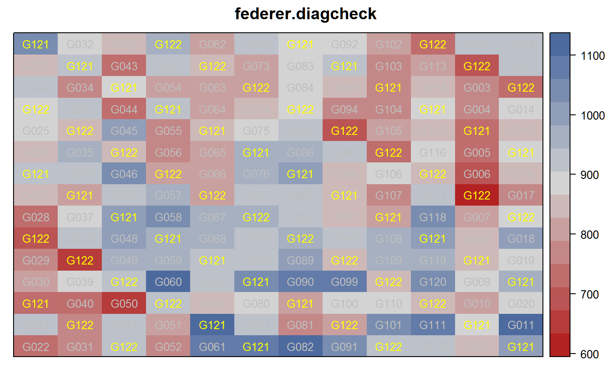

federer.diagcheck.RdWheat experiment augmented with two check varieties in diagonal strips.
A data frame with 180 observations on the following 4 variables.
rowrow
colcolumn
gengenotype, 120 levels
yieldyield
This experiment was conducted by Matthew Reynolds, CIMMYT. There are 180 plots in the field, 60 for the diagonal checks (G121 and G122) and 120 for new varieties.
Federer used this data in multiple papers to illustrate the use of orthogonal polynomials to model field trends that are not related to the genetic effects.
Note: Federer and Wolfinger (2003) provide a SAS program for analysis of this data. However, when the SAS program is used to analyze this data, the results do not match the results given in Federer (1998) nor Federer and Wolfinger (2003). The differences are slight, which suggests a typographical error in the presentation of the data.
The R code below provides results that are consistent with the SAS code of Federer & Wolfinger (2003) when both are applied to this version of the data.
Plot dimensions are not given.
Federer, Walter T. 1998. Recovery of interblock, intergradient, and intervariety information in incomplete block and lattice rectangle design experiments. Biometrics, 54, 471--481. http://doi.org/10.2307/3109756
Walter T Federer and Russell D Wolfinger, 2003. Augmented Row-Column Design and Trend Analysis, chapter 28 of Handbook of Formulas and Software for Plant Geneticists and Breeders, Haworth Press.
library(agridat) data(federer.diagcheck) dat <- federer.diagcheck # Show the layout as in Federer 1998. dat$check <- ifelse(dat$gen == "G121" | dat$gen=="G122", "C","N") libs(desplot) desplot(yield ~ col*row, dat, text=gen, show.key=FALSE, # aspect unknown shorten='no', col=check, cex=.8, col.text=c("yellow","gray"), main="federer.diagcheck")# Now reproduce the analysis of Federer 2003. # Only to match SAS results dat$row <- 16 - dat$row dat <- dat[order(dat$col, dat$row), ] # Add row / column polynomials to the data. # The scaling factors sqrt() are arbitrary, but used to match SAS nr <- length(unique(dat$row)) nc <- length(unique(dat$col)) rpoly <- poly(dat$row, degree=10) * sqrt(nc) cpoly <- poly(dat$col, degree=10) * sqrt(nr) dat <- transform(dat, c1 = cpoly[,1], c2 = cpoly[,2], c3 = cpoly[,3], c4 = cpoly[,4], c6 = cpoly[,6], c8 = cpoly[,8], r1 = rpoly[,1], r2 = rpoly[,2], r3 = rpoly[,3], r4 = rpoly[,4], r8 = rpoly[,8], r10 = rpoly[,10]) dat$trtn <- ifelse(dat$gen == "G121" | dat$gen=="G122", dat$gen, "G999") dat$new <- ifelse(dat$gen == "G121" | dat$gen=="G122", "N", "Y") dat <- transform(dat, trtn=factor(trtn), new=factor(new)) m1 <- lm(yield ~ c1 + c2 + c3 + c4 + c6 + c8 + r1 + r2 + r4 + r8 + r10 + c1:r1 + c2:r1 + c3:r1 + gen, data = dat) # To get Type III SS use the following # libs(car) # Anova(m1, type=3) # Matches PROC GLM output ## Sum Sq Df F value Pr(>F) ## (Intercept) 538948 1 159.5804 3.103e-16 *** ## c1 13781 1 4.0806 0.0494940 * ## c2 51102 1 15.1312 0.0003354 *** ## c3 45735 1 13.5419 0.0006332 *** ## c4 24670 1 7.3048 0.0097349 ** ## c6 33002 1 9.7719 0.0031359 ** # lmer libs(lme4,lucid) dat$one <- factor(rep(1, nrow(dat))) # lmer with bobyqa (default) m2b <- lmer(yield ~ trtn + (0 + r1 + r2 + r4 + r8 + r10 + c1 + c2 + c3 + c4 + c6 + c8 + r1:c1 + r1:c2 + r1:c3 || one) + (1|new:gen), data = dat, control=lmerControl(check.nlev.gtr.1="ignore"))#>vc(m2b)#> grp var1 var2 vcov sdcor #> new.gen (Intercept) <NA> 2870 53.57 #> one r1:c3 <NA> 5589 74.76 #> one.1 r1:c2 <NA> 57390 239.6 #> one.2 r1:c1 <NA> 130000 360.5 #> one.3 c8 <NA> 6467 80.42 #> one.4 c6 <NA> 1398 37.38 #> one.5 c4 <NA> 1790 42.31 #> one.6 c3 <NA> 2556 50.56 #> one.7 c2 <NA> 5935 77.04 #> one.8 c1 <NA> 0 0 #> one.9 r10 <NA> 1130 33.61 #> one.10 r8 <NA> 1355 36.81 #> one.11 r4 <NA> 2261 47.55 #> one.12 r2 <NA> 242.8 15.58 #> one.13 r1 <NA> 9198 95.91 #> Residual <NA> <NA> 4412 66.42## grp var1 var2 vcov sdcor ## new.gen (Intercept) <NA> 2869 53.57 ## one r1:c3 <NA> 5532 74.37 ## one.1 r1:c2 <NA> 58230 241.3 ## one.2 r1:c1 <NA> 128000 357.8 ## one.3 c8 <NA> 6456 80.35 ## one.4 c6 <NA> 1400 37.41 ## one.5 c4 <NA> 1792 42.33 ## one.6 c3 <NA> 2549 50.49 ## one.7 c2 <NA> 5942 77.08 ## one.8 c1 <NA> 0 0 ## one.9 r10 <NA> 1133 33.66 ## one.10 r8 <NA> 1355 36.81 ## one.11 r4 <NA> 2269 47.63 ## one.12 r2 <NA> 241.8 15.55 ## one.13 r1 <NA> 9200 95.92 ## Residual <NA> <NA> 4412 66.42 ## lmer with Nelder_Mead gives 'wrong' results ## m2n <- lmer(yield ~ trtn + (0 + r1 + r2 + r4 + r8 + r10 + ## c1 + c2 + c3 + c4 + c6 + c8 + r1:c1 + r1:c2 + r1:c3 || one) + ## (1|new:gen) ## , data = dat, ## control=lmerControl(optimizer="Nelder_Mead",check.nlev.gtr.1="ignore")) ## vc(m2n) ## groups name variance stddev ## new.gen (Intercept) 3228 56.82 ## one r1:c3 7688 87.68 ## one.1 r1:c2 69750 264.1 ## one.2 r1:c1 107400 327.8 ## one.3 c8 6787 82.38 ## one.4 c6 1636 40.45 ## one.5 c4 12270 110.8 ## one.6 c3 2686 51.83 ## one.7 c2 7645 87.43 ## one.8 c1 0 0.0351 ## one.9 r10 1976 44.45 ## one.10 r8 1241 35.23 ## one.11 r4 2811 53.02 ## one.12 r2 928.2 30.47 ## one.13 r1 10360 101.8 ## Residual 4127 64.24 # ---------------------------------------------------------------------------- if(0){ # asreml3 libs(asreml) libs(lucid) m3 <- asreml(yield ~ -1 + trtn, data=dat, random = ~ r1 + r2 + r4 + r8 + r10 + c1 + c2 + c3 + c4 + c6 + c8 + r1:c1 + r1:c2 + r1:c3 + new:gen) coef(m3) # REML cultivar means. Very similar to Federer table 2. rev(sort(round(coef(m3)$fixed[3] + coef(m3)$random[137:256,],0))) ## gen_G060 gen_G021 gen_G011 gen_G099 gen_G002 ## 974 949 945 944 942 ## gen_G118 gen_G058 gen_G035 gen_G111 gen_G120 ## 938 937 937 933 932 ## gen_G046 gen_G061 gen_G082 gen_G038 gen_G090 ## 932 931 927 927 926 vc(m3) ## effect component std.error z.ratio constr ## r1!r1.var 9201 13720 0.67 pos ## r2!r2.var 241.7 1059 0.23 pos ## r4!r4.var 2269 3915 0.58 pos ## r8!r8.var 1355 2627 0.52 pos ## r10!r10.var 1133 2312 0.49 pos ## c1!c1.var 0.01 0 4.8 bound ## c2!c2.var 5942 8969 0.66 pos ## c3!c3.var 2549 4177 0.61 pos ## c4!c4.var 1792 3106 0.58 pos ## c6!c6.var 1400 2551 0.55 pos ## c8!c8.var 6456 9702 0.67 pos ## r1:c1!r1.var 128000 189700 0.67 pos ## r1:c2!r1.var 58230 90820 0.64 pos ## r1:c3!r1.var 5531 16550 0.33 pos ## new:gen!new.var 2869 1367 2.1 pos ## R!variance 4412 915 4.8 pos } # ---------------------------------------------------------------------------- if(0){ ## libs(asreml4) ## libs(lucid) ## m3 <- asreml(yield ~ -1 + trtn, data=dat, ## random = ~ r1 + r2 + r4 + r8 + r10 + ## c1 + c2 + c3 + c4 + c6 + c8 + r1:c1 + r1:c2 + r1:c3 + new:gen) ## coef(m3) ## # REML cultivar means. Very similar to Federer table 2. ## rev(sort(round(coef(m3)$fixed[3] + coef(m3)$random[137:256,],0))) ## ## gen_G060 gen_G021 gen_G011 gen_G099 gen_G002 ## ## 974 949 945 944 942 ## ## gen_G118 gen_G058 gen_G035 gen_G111 gen_G120 ## ## 938 937 937 933 932 ## ## gen_G046 gen_G061 gen_G082 gen_G038 gen_G090 ## ## 932 931 927 927 926 ## vc(m3) ## ## effect component std.error z.ratio constr ## ## r1!r1.var 9201 13720 0.67 pos ## ## r2!r2.var 241.7 1059 0.23 pos ## ## r4!r4.var 2269 3915 0.58 pos ## ## r8!r8.var 1355 2627 0.52 pos ## ## r10!r10.var 1133 2312 0.49 pos ## ## c1!c1.var 0.01 0 4.8 bound ## ## c2!c2.var 5942 8969 0.66 pos ## ## c3!c3.var 2549 4177 0.61 pos ## ## c4!c4.var 1792 3106 0.58 pos ## ## c6!c6.var 1400 2551 0.55 pos ## ## c8!c8.var 6456 9702 0.67 pos ## ## r1:c1!r1.var 128000 189700 0.67 pos ## ## r1:c2!r1.var 58230 90820 0.64 pos ## ## r1:c3!r1.var 5531 16550 0.33 pos ## ## new:gen!new.var 2869 1367 2.1 pos ## ## R!variance 4412 915 4.8 pos }